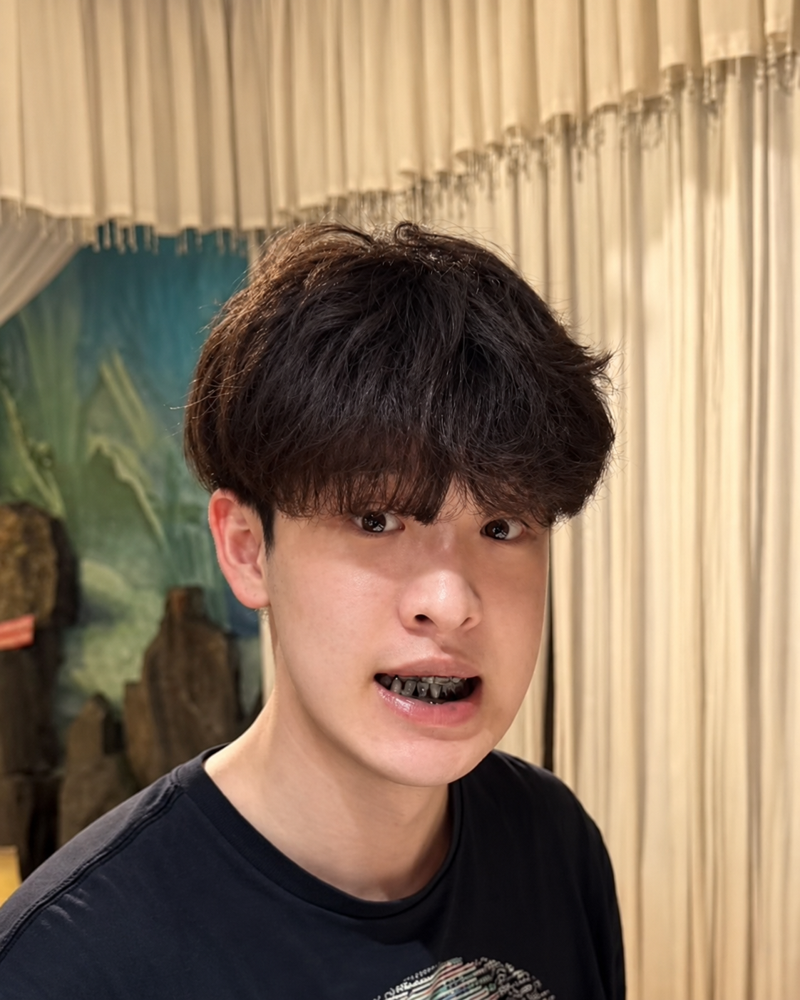

Part-Level 3D Gaussian Vehicle Generation with Joint and Hinge Axis Estimation
Generating animatable 3D Gaussian vehicles from image inputs, with part-aware refinement and estimation of joint positions and hinge axes.
I'm a fourth-year Computer Engineering student at the University of Toronto and a remote visiting student at the Inception 3D Lab, Westlake University, advised by Prof. Anpei Chen. I will be joining the lab as a PhD student in Fall 2027.
Previously, I spent a year as a research intern on the Spatial Intelligence team at Huawei Noah's Ark Lab (Canada), supervised by Yuan Ren.
My research focuses on 3D vision. I'm currently exploring structured language representations for agentic spatial understanding. Outside of research, I enjoy animation, jazz-pop, and Metroidvania games.

Generating animatable 3D Gaussian vehicles from image inputs, with part-aware refinement and estimation of joint positions and hinge axes.